This page covers some of the elements you'll find in DROD. You can use these yourself in the level editor.
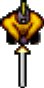
You play as Beethro Budkin, professional dungeon exterminator. He and his sword take up two squares. Keeping Beethro's sword between him and the monsters is key to staying alive. For more information about movement, see Keyboard Commands. At certain points and in other holds (including "Gunthro and the Epic Blunder"), you play as other characters, possibly with distinct movement and attack mechanics.
The minimap shows the explored rooms in your immediate vicinity. If a room has any monsters remaining it will be red (required to open the level's blue doors) or magenta (not required). Once all of the monsters have been removed from the current room, the cleared room will turn green on the map. When Beethro has exited a green room it will turn white on the minimap, indicating the room was successfully cleared. Typically, all rooms in a level must be cleared in order to exit the level.

When the threat clock appears, it will help you anticipate timed phenomena. Roach queens spawn roach eggs and tarstuff grows every thirty turns, for instance. Other special monster events happen on multiples of five or ten turns.
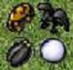
As a professional dungeon exterminator, you need to clear each room of all monsters. To kill most monsters, hit it with your sword. If you leave a room without clearing all monsters, the room will reset on re-entrance, and monsters you have destroyed come back to life. Please refer to the authoritative Monster Reference for more information.
You can step on a checkpoint to save your game at any point. Using checkpoints can make difficult rooms much easier to conquer. If your character dies after stepping on a checkpoint in the room, then instead of starting the room over you will return to the last turn you activated a checkpoint. A checkpoint may be stepped on any number of times. Pressing the "Restart room" key (default: 'R') will restore back to all the checkpoints stepped on in a room in reverse order. Checkpoints can be turned off in the player settings if you're looking for a (more) hardcore playing experience.
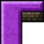
Like walls in the real world, these are obstacles that prevent movement. You can swing your sword through walls.
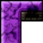
Broken walls are ready to fall apart but have to be looked for as they blend in with solid walls.

Pits and water are not particularly dangerous since smitemasters are too experienced to accidentally fall into them, but be careful of trapdoors that can leave you shanghaied and monsters that fly or swim. Trapdoors fall away to pit or water after being stepped upon once. Shallow water can be waded in by certain people and creatures. Only some can wield a weapon while in shallow water.
Thin ice can appear in shallow or deep water. Thin ice will melt as soon as the player steps off it.
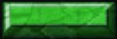
Room clear gates (or green doors) are opened when all of the monsters in a room are defeated. Once a green door is opened, it will remain open when a room is exited.
Level clear gates (or blue doors) are opened when all of the monsters in the level are defeated and all rooms are visited. There are some exceptions to these rules which you may encounter. Once a blue door is opened, it will remain open when a room is exited.
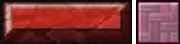
Trapdoor gates (or red doors) are opened when all of the trapdoors in a room have collapsed. Unlike green and blue doors, red doors always close again when a room is exited.
Yellow doors are opened and closed by stepping on pressure plates or striking orbs with a weapon. When an orb is hit, bolts of energy will shoot from it opening, closing, or toggling one or more doors. Some orbs are damaged and can only be used once. There are some tricky puzzles that are based on opening and closing doors in the proper sequence. Click on an orb or pressure plate to highlight the doors it affects. Click on a door to highlight which room elements affect it (green=open, red=close, orange=toggle). Unlike green and blue doors, yellow doors return to their original state when a room is left.

Like orbs, pressure plates are used to affect yellow doors. They are activated when something weighs them down. Three kinds of plates exist: one-time plates are only activated the first time they're depressed, multi-use plates are activated each time they're depressed, and on-off plates are activated both when they are depressed and when they are released.

Stairways connect areas of dungeons together. Most levels are completed by finding stairs leading to the next.
Scrolls contain information that may or may not be useful. You must step on the same square they are in to read them.
Force arrows prevent movement opposite to the direction they point. The north-pointing force arrow could be stepped onto from all directions except northwest, north, and northeast. Once anything steps onto a north-pointing force arrow, it can leave in all directions except southwest, south, and southeast. Force arrows can also be enabled or disabled by orbs and pressure plates. Disabled force arrows allow movement in all directions.
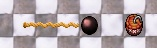
Bombs and powder kegs can be detonated either by a weapon strike or a burning fuse. Bombs are immobile, but powder kegs can be pushed by the player and certain monsters. Bombs have an explosion range of three tiles and powder kegs a range of one tile. Most entities, including the player, will be killed if they are within range of an explosion. If another bomb or powder keg is located within that range, it will explode as well. A fuse can be activated by stepping on a fuse endpoint or by an explosion. Fuses and explosions will not burn against the direction of force arrows.

Tunnels allow the player to move quickly from one area of a room to another. When you are standing on a tunnel you move in the direction the tunnel faces, you will reappear on the closest tunnel in that direction, along the same column or row. Monsters won't use tunnels, and they will only move onto a tunnel if the player is standing on it, in which case, the player dies as usual.
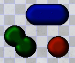
Tarstuff is a viscous goo. Each type is vulnerable in a certain place. Tar is vulnerable on flat sides. Mud is vulnerable on outer round edges. Gel is only vulnerable on inner (concave) edges and is typically the most difficult type to deal with. Sentient gooey babies can pop off broken tarstuff and attack you.
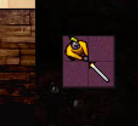
Floating platforms can be used to cross areas of pit by moving against the edge of the platform.
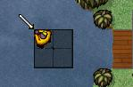
Rafts can be used to cross deep water by moving against the edge of the raft. Note that rafts cannot enter shallow water.
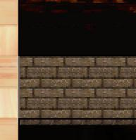
Bridges must be anchored to a wall, floor, trapdoor, or similar object to remain in place. If all its anchor points are removed, the bridge falls down into the depths, taking everything it supported with it.
Tarstuff gates (or black doors) are opened when all of the tarstuff in a room has been removed. Like yellow and red doors, leaving a room will make black doors close again.
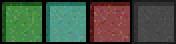
The sister gates behave exactly like their counterparts, except that they close when the corresponding event happens. This can be dangerous in the case of level and room clear gates, which remain closed even after you leave the room.
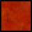
Hot tiles are dangerous to stand on. Anything, including you, that can be hurt by a sword will die if it stands still on a hot tile for one turn. The only exceptions to this are the various forms of tarstuff and flying creatures, which are completely unharmed by the heat.
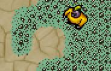
Oremites are small creatures that feed on metal. They are not dangerous by themselves, but Beethro must keep his sword sheathed when walking around in an area covered with them.
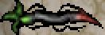
Briar blocks your way, but is not otherwise dangerous. However, a patch of briar connected to a briar root will grow outwards at a steady pace. Each time the briar grows, the newly created briar pieces must first mature; they do so at a rate of one per turn for each root in the patch. When the patch is completely mature, it grows one tile outwards. Standing in its way at this point is a very bad idea.
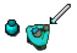
Mimics are unleashed when Beethro drinks a mimic potion. After Beethro drinks the potion, all activity in the room stops while you use the movement keys to find a place for a mimic. When you've reached the desired location, press the wait key (default: '5' on the numpad) and a mimic will appear. Mimics are copies of Beethro and they move exactly as he does. Pushing mimics against obstacles will change their position relative to Beethro.
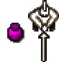
When Beethro drinks an invisibility potion, he becomes invisible to monsters. However, if he steps within 5 squares of a monster it will be able to smell him. Picking up another invisibility potion will make Beethro visible again.
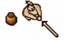
Decoys are produced when Beethro drinks a decoy potion. Like mimic potions, after drinking, all activity stops until the decoy has been placed. Decoys will not move after they have been placed. They can be used to distract monsters. If a decoy is within 5 squares of a monster and Beethro is far away, the monster will move to the decoy instead of Beethro.
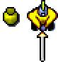
Clones are produced when Beethro drinks a clone potion. When left alone, clones don't do much of anything, but Beethro is able to move his consciousness from his current body to a clone by using the "Switch Active Player" key (default: Tab) or clicking with the mouse, thus allowing him to reach areas that would not otherwise be accessible. Monsters only attack the active clone.
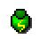
Speed potions make Beethro faster, allowing him to make two moves in the time he normally makes one.
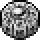
Mirrors block Evil Eye and Aumtlich gazes and can be used to weigh down pressure plates. Beethro can push them around by himself, or he can use his sword to do so. He can destroy them by striking them head-on. They can also be pushed into shallow water to make stepping stones, but sink in deep water.
When Beethro steps on an arrow rotator token, all force arrows in the room are turned 45 degrees in the direction indicated. The token then changes direction, and stepping on it again will rotate arrows back.
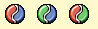
When Beethro steps on a tar/mud switcher, all tar in the room changes to mud, and vice-versa. Other versions also exist that switch with tar or mud with gel.
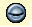
Stepping on a vision token gives Beethro enhanced awareness of his surroundings. This allows him to see invisible things, see what is hidden under tarstuff, and makes him aware of the line of sight that would awaken evil eyes. Stepping on the token again removes this effect.
Stepping on a power token allows Beethro to control any fegundo in the room and activate orbs by touching them. It also alerts all monsters in the room that whoever just activated the token is edible. This doesn't matter much to Beethro, whom the monsters try to eat anyway, but it may concern other individuals.
When Beethro steps on a disarm token, his weapon is taken away. The upside of this is that while he's not wielding a weapon, he can walk on trapdoors without dropping them. He can get his weapon back by stepping on the token again or leaving the room.
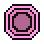
The relay station is a place where the Empire's citizens work. Citizens will continually move between relay stations to pick up materials.
The persistent movement token is always activated. When this token is present in a room, citizens will never give up in their attempts to reach the next relay station on their route.
Orthogonal squares prevent all movements in diagonal directions. This means that if Beethro is standing on such a square, he can only leave this square by north, east, south or west. It also means that he cannot enter an orthogonal square diagonally.
If a conquer token is present in a room, you must step on it to conquer the room. Additionally, your CaravelNet high score for conquering the room is calculated as the number of moves it took you to reach the token, rather than the number of moves it took you to clear the room and leave.
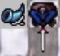
Picking up a soldier horn calls one nearby soldier to the nearest entrance to help out. They are sworded allies who can help kill monsters, but aren't entirely bright. If there are no entrance squares with a direct path to the player, the soldier does not appear and the horn is used up.
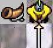
Picking up a squad horn he calls one nearby squad member to the nearest entrance to help out. Squad members behave like player clones - you can switch control to them using the "Switch Active Player" key (default: Tab), or by clicking on them with the mouse. If there are no entrance squares with a direct path to the player, the squad member does not appear and the horn is used up.
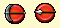
When you come across a weapon token, you can swap your current weapon for another one. Each weapon has distinct tactical advantages and disadvantages. The new weapon typically remains with you until you leave the current room or step on another weapon token.
The staff has no sharp edges and cannot kill monsters directly. However, most monsters can be pushed with the staff, and striking them will cause them to be stunned for one turn. The staff can also be used to push mirrors and powder kegs, and can pass through bombs without exploding them. The staff is not affected by oremites.
The caber behaves similarly to the staff but is much heavier. It can crush monsters by pushing them against a wall or obstacle. Striking a bomb or powder keg with the caber will cause it to explode, but the caber will protect the player from the bomb's blast.
The spear has a sharp point, which can be used with a forward stabbing motion to kill most monsters. The shaft of a spear behaves similarly to a staff and can be used to stun monsters and push objects around.
The pickaxe has a flat edge which can be used for pushing forward or stunning, but the points of the pickaxe are deadly.
The dagger can stab monsters and break mirrors like the sword, but as it is a small weapon, to wield it Beethro must turn to face the direction of attack and he cannot defend against larger weapons. When armed with this weapon, Beethro can move over trapdoors without dropping them.
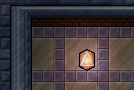
In order to thwart those pesky smitemasters, the Empire employs seeding beacons to keep dungeons populated with monsters. If you encounter any, you must make sure they are turned off before leaving a cleared room, otherwise the room will automatically refill with monsters after you leave it.
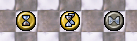
Temporal split tokens create a localized temporal distortion, allowing the player to reverse time in the room in which the token appears. After stepping on a token, the player may activate it by pressing the "Switch Active Player" key (default: Tab). Time will be reversed to the point when the player initially stepped on the token. From that point, a temporal projection of the player will carry out the same actions taken by the player after stepping on the token, while the player is free to take a different path in parallel.
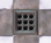
Floor spikes are sharp, pointy spikes that deploy every ten turns. They are deadly to most non-flying creatures, including the player.
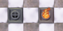
Fire traps can be turned on or off by orbs or pressure plates. A fire trap is harmless until activated; an active fire trap will kill any creature that steps on it, with the exception of gentryii.
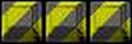
Hold Complete walls are a meta-element that will fade after the hold has been completed. Once this condition is met, restore game or travel to a room with Hold Complete walls and you will be able to walk through them. Master walls can only be passed through after a hold has been completed and all secret rooms cleared. Monsters will always treat Hold Complete walls and Master walls as walls.